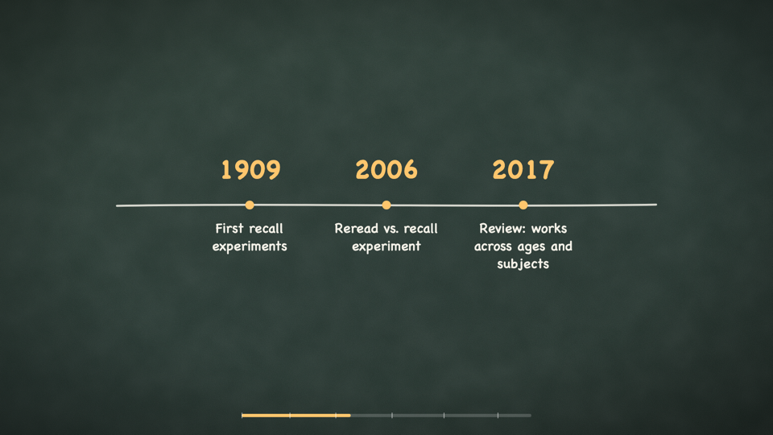

chalkreel
Learning objective in, accessible explainer video out — an agent-skill package for e-learning developers and instructional designers.
Repository · Sample transcript page · 12-second sample render (MP4, silent)
The problem
AI explainer-video generators start from a topic and optimize for engagement. A learning video has different requirements they ignore:
- It starts from a measurable learning objective, not a topic.
- Cognitive load is managed deliberately (Mayer's multimedia principles), not left to taste.
- Captions, a transcript, and audio-description notes are deliverables — teams shipping to an LMS can be penalized for skipping them.
- Every factual claim in the narration should be traceable to a source.
No open-source explainer tool does any of this. That is the gap chalkreel fills.
The method
chalkreel is an agent skill: a written pipeline (skill/SKILL.md) plus
small standalone scripts and a Remotion template. The pipeline has seven stages and
four human approval gates:
1. OBJECTIVE GATE topic → ABCD objective (script-validated) → GATE 1 approval 2. RESEARCH claims extracted with sources, before scripting 3. NARRATION segment-budgeted script, AI-tell lint, reading level → GATE 2 approval 4. STYLE BAKE-OFF same beat in 2–3 visual themes → GATE 3 pick 5. BUILD one Remotion component per segment; TTS with word timestamps 6. ACCESSIBILITY SRT + transcript HTML + AD notes + "no info in audio alone" lint 7. QC scored against written Mayer-principle criteria → GATE 4 final cut
Frames are drawn in code (Remotion + SVG): no generative video models, no stock footage. Every frame is reviewable, diffable, and reproducible.
Sample render

The 12-second sample render is a silent, constructed example: it demonstrates the chalkboard backdrop, code-drawn scene, word-aligned caption layer and chapter progress bar for segments 1–2. The narration audio was not recorded in this build run, so no full video with sound exists. Do not judge the content from it; judge the paper trail.
The paper trail (worked example)
One short sample — "How retrieval practice works", 6 segments, ~110 s — was run through every scriptable stage of the pipeline. All artifacts are committed:
| Step | Artifact |
|---|---|
| 1 · Objective | ABCD objective + beat map (gate script passes) |
| 2 · Research | six sourced claims |
| 3 · Narration | script — lint passes with 0 errors |
| 4 · Storyboard | storyboard JSON — a11y lint passes |
| 5 · Timing | word timings — constructed example, not a real TTS run |
| 6 · Subtitles | SRT — generated by make-srt.mjs |
| 7 · Claims ledger | claims ledger |
| 8 · QC | QC report — includes one real FAIL→fix→re-check cycle |
The generated accessible transcript page is what the pipeline would ship alongside the video.
What was verified (and how)
- Negative tests: seeded bad narration (
bad-narration.txt) trips 29 lint errors and is rejected; a broken storyboard fails the a11y lint on 10 violations. The lints demonstrably catch what they claim to catch. - Round-trip: 250/250 narration words appear in the generated SRT; cues are monotonic; the transcript HTML contains every segment, on-screen text and AD note.
- Compile + render: the Remotion template passes
tsc --noEmit, bundles, and renders (360-frame sample + stills). One real visual defect was found by frame QC and fixed.
Evidence: what it can and cannot show
- Can show: the pipeline's written criteria were applied mechanically and transparently; the tooling catches real violations; the template produces reviewable frames.
- Cannot show: that any output teaches anything (no learner testing, and none is claimed), that experts endorse the content (no expert panel), or caption-accuracy against real speech (no TTS run).
Reviews referenced on this page are agent heuristic reviews conducted by the build agent (same model as the author — a disclosed limitation), never presented as expert or learner feedback.
Accessibility
The generated transcript page and this site target WCAG 2.1 AA: one h1 per
page, logical heading order, lang attribute, high-contrast text, 320 px-safe
reflow, no motion, descriptive link text, and text alternatives for the sample media. The
skill's a11y-lint.mjs enforces the pipeline-side rule that no fact lives in
audio alone. The site was checked manually and with automated markup review; it has not
been tested with a screen reader by a person who uses one daily — that review is a known
gap.
License and attribution
Code: MIT (LICENSE).
Method-credit and license boundaries are documented in
ATTRIBUTION.md:
the code-drawn Remotion method is inspired by anything2explainer (PolyForm
Noncommercial — method only, zero code copied, re-implemented from scratch), the gated
approval flow pattern from vox-director (MIT), and the AI-writing-tells checklist
concept from humanizer and Wikipedia's "Signs of AI writing" (lint implemented
independently).